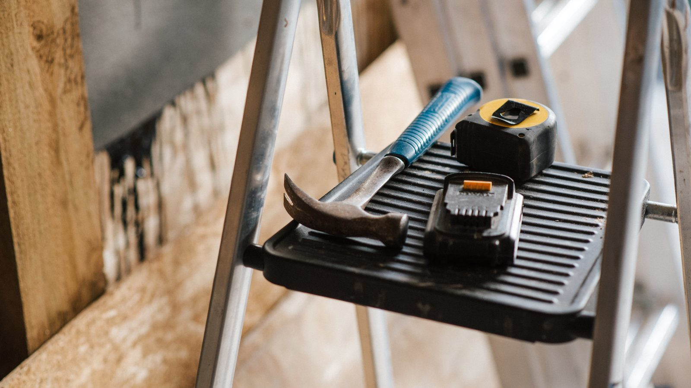
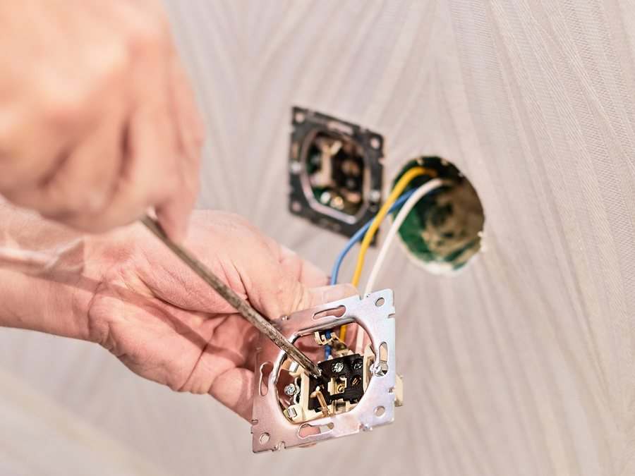

Hausmeisterservice in Oldenburg
Kleinreparaturen, Kontrollgänge und die vielen Kleinigkeiten am Objekt, für die sonst niemand zuständig ist. Mit festem Ansprechpartner statt wechselnder Firmen.
Kleine Sachen werden groß, wenn sich niemand kümmert
Eine defekte Leuchte im Kellerflur ist keine große Sache. Eine klemmende Haustür auch nicht. Ein loser Rinnenhalter erst recht nicht. Das Problem ist nicht die einzelne Reparatur, sondern dass sich für jede eine Firma finden lassen muss, die für zwanzig Minuten Arbeit anrückt.
Genau dafür gibt es den Hausmeisterservice. Wir sind ohnehin regelmäßig am Objekt, weil wir dort reinigen oder die Grünanlage pflegen. Was auffällt, erledigen wir gleich mit oder melden es Ihnen, bevor daraus ein Schaden wird.
Für Hausverwaltungen bedeutet das einen Ansprechpartner statt einer Liste von Handwerkern, die man einzeln anrufen und koordinieren muss.

Was wir am Objekt übernehmen
Manches läuft im festen Turnus mit, anderes auf Abruf. Beides lässt sich kombinieren.
Kleinreparaturen
Leuchtmittel und Starter tauschen, klemmende Türen und Fenster einstellen, Schlösser und Beschläge nachziehen, Silikonfugen erneuern, tropfende Perlatoren wechseln.
Kontrollgänge
Regelmäßiger Rundgang durch Keller, Treppenhaus und Außenbereich. Wir schauen auf Beleuchtung, Türen, Fluchtwege und offensichtliche Schäden und melden, was auffällt.
Montage und Aufbau
Möbel aufbauen, Regale und Halterungen anbringen, Schilder und Briefkastenanlagen montieren, Absperrungen auf- und abbauen.
Entsorgung kleiner Mengen
Was im Keller oder am Müllplatz stehen bleibt, nehmen wir mit. Für größere Mengen und Sperrmüll ist eine eigene Beauftragung nötig.
Ablesen und Zugang
Zählerstände ablesen, Handwerkern und Ablesediensten die Tür öffnen, Schlüsselübergaben begleiten. Damit muss kein Eigentümer extra anreisen.
Winterliche Kontrolle
Rohre in unbeheizten Räumen, offene Kellerfenster, Wasserabsperrungen. Im Winter die Punkte, an denen ein Frostschaden entsteht.
Wo wir aufhören und ein Fachbetrieb übernimmt
Elektroarbeiten an der festen Installation, Eingriffe an Gas- und Heizungsanlagen sowie Arbeiten am Trinkwassernetz gehören in die Hand eines eingetragenen Fachbetriebs. Das ist keine Frage des Könnens, sondern eine von Zulassung und Haftung.
Was wir stattdessen tun: Wir erkennen das Problem, melden es Ihnen mit Foto und holen auf Wunsch die passenden Handwerker dazu. Für Elektro, Sanitär und Heizung arbeiten wir mit festen Partnerbetrieben zusammen, sodass Sie sich nicht selbst auf die Suche machen müssen.
Was Eigentümer und Verwaltungen wissen wollen
Was kostet der Hausmeisterservice in Oldenburg?
Für laufende Betreuung vereinbaren wir meist eine monatliche Pauschale, die sich nach Objektgröße und Umfang der Kontrollgänge richtet. Einzelne Reparaturen rechnen wir nach Stunden und Material ab.
Die Pauschale ist für die meisten Objekte günstiger, weil kleine Arbeiten dann ohne separate Anfahrt mitlaufen. Eine einzelne Anfahrt für zwanzig Minuten Arbeit ist immer teuer, egal bei welchem Betrieb.
Machen Sie auch Elektroarbeiten?
Leuchtmittel tauschen ja, Eingriffe in die feste Elektroinstallation nein. Steckdosen setzen, Leitungen verlegen oder am Sicherungskasten arbeiten darf nur ein eingetragener Elektrofachbetrieb.
Wir arbeiten mit festen Partnern zusammen und holen sie bei Bedarf dazu. Sie bekommen die Rückmeldung von uns und müssen sich nicht selbst kümmern.
Und bei Sanitär und Heizung?
Dasselbe Prinzip. Einen Perlator wechseln oder eine Silikonfuge erneuern übernehmen wir. Alles, was an die Installation geht, also Rohre, Ventile, Therme oder Trinkwasser, geht an einen Fachbetrieb.
Bei einem Wasserschaden gilt: Absperren und melden können wir sofort, die Instandsetzung macht der Fachmann.
Wie schnell kommen Sie bei einem Problem?
Das hängt davon ab, worum es geht. Eine defekte Kellerleuchte erledigen wir beim nächsten regulären Termin am Objekt. Bei Dingen, die die Sicherheit oder Nutzbarkeit betreffen, etwa eine defekte Haustür, kommen wir kurzfristig.
Einen Notdienst rund um die Uhr bieten wir außerhalb des Winterdienstes nicht an. Wenn Sie das brauchen, sagen wir es Ihnen offen, damit Sie nicht mit falschen Erwartungen anfangen.
Brauchen Sie Schlüssel für das Objekt?
Für Kontrollgänge und Arbeiten im Haus ja. Schlüssel werden schriftlich übergeben, dokumentiert und in einem gesicherten Schrank verwahrt. Beim Vertragsende bekommen Sie alles gegen Quittung zurück.
Wir sind über eine Betriebshaftpflicht mit 10 Millionen Euro Deckungssumme abgesichert. Den Nachweis legen wir Hausverwaltungen gern vorab vor.
Bekomme ich eine Rückmeldung über die Arbeiten?
Ja. Bei Kontrollgängen melden wir, was auffällt, auf Wunsch mit Foto. Bei ausgeführten Arbeiten sehen Sie auf der Rechnung, was gemacht wurde und wie lange es gedauert hat.
Für Hausverwaltungen ist das oft wichtiger als der Preis, weil sie es gegenüber Eigentümern belegen können müssen.
Übernehmen Sie auch einzelne Aufträge?
Möbelaufbau, Montagearbeiten und einzelne Reparaturen ja, sofern wir Kapazität haben. Der größere Teil unserer Hausmeisterarbeit läuft aber über Objekte, die wir ohnehin betreuen.
Fragen Sie an, dann sagen wir Ihnen, ob und wann wir es einrichten können.
Was gehört zur laufenden Objektbetreuung dazu?
Bei den meisten Kunden läuft der Hausmeisterservice zusammen mit Treppenhausreinigung, Grünpflege, Winterdienst und Mülltonnenservice. Das ist der Punkt, an dem sich eine Pauschale wirklich rechnet, weil dieselbe Kraft ohnehin am Objekt ist.
Mehr dazu auf der Seite zur Objektbetreuung.
Warum Hausverwaltungen uns beauftragen
Darauf können Sie sich verlassen
- Seit über 40 Jahren am Markt in Oldenburg
- Rund 200 betreute Objekte, viele davon seit Jahren
- Ein Ansprechpartner statt einer Liste von Handwerkern
- Rückmeldung mit Foto, wenn uns etwas auffällt
- Feste Partnerbetriebe für Elektro, Sanitär und Heizung
- Betriebshaftpflicht mit 10 Mio. Euro Deckungssumme
Am wirtschaftlichsten ist der Hausmeisterservice zusammen mit Reinigung, Grünpflege und Winterdienst. Mehr zur Objektbetreuung
Angebot anfragen
Schildern Sie uns kurz Ihr Objekt: Anzahl der Einheiten, welche Bereiche kontrolliert werden sollen und ob es konkrete Aufgaben gibt, die regelmäßig anfallen.
- Telefon
- 0441 57060160
- info@olwo-gmbh.de
- Bürozeiten
- Mo. bis Do. 09:00 bis 13:00 und 14:00 bis 16:30 Uhr, Fr. 09:00 bis 13:00 Uhr
Was Kunden über uns schreiben
Sie sind stets bereit zu helfen und bewältigen ihre Arbeit, selbst bei schwierigen Umständen wie Wassereinbruch oder der Koordination der Müllabfuhr, mit beeindruckender Kompetenz und Hingabe.ZargosoBewertung bei golocal
Seitdem die Objektbetreuung OLWO unser Mehrfamilienhaus betreut, läuft alles reibungslos. Treppenhaus, Garten, Müllplatz, alles immer top gepflegt. Absolut zuverlässig, freundlich und schnell erreichbar.Max ZwickGoogle Rezension
Ich bin seit mehreren Jahren Kunde bei der OLWO GmbH und mit der Gartenpflege rundum zufrieden. Das Team ist zuverlässig, freundlich und arbeitet sehr ordentlich. Der Garten wird immer top gepflegt.Niklas ZyturGoogle Rezension
Passend dazu
Treppenhausreinigung
Treppen, Flure, Keller und Aufzug im festen Turnus. Der Klassiker in Kombination mit dem Hausmeisterservice.
Mehr erfahrenGartenpflege
Rasen, Hecken, Beete und Laub. Über die ganze Saison im Pflegevertrag.
Mehr erfahrenWinterdienst
Von November bis März rund um die Uhr in Bereitschaft, auch an Wochenenden.
Mehr erfahrenMülltonnenservice
Tonnen raus zum Abfuhrtermin, Tonnen zurück, Standplatz sauber.
Mehr erfahrenDachrinnenreinigung
Mit SkyVacAbsaugen vom Boden aus. Lose Rinnenhalter richten wir im Hausmeisterservice gleich mit.
Mehr erfahrenGebäudereinigung
Unterhaltsreinigung und Grundreinigung für Wohnanlagen, Büros, Praxen und Ladenflächen.
Mehr erfahren